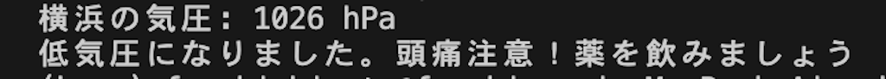

プログラミング
~気圧から判断して頭痛注意を知らせてくれるプログラム~
横浜の気圧を取得して、1007hPa以下になると頭痛注意と表示するようにした。
2015年に行われた東海大学の研究で、1013hPaよりも6〜10hPa下がると頭痛の発症率が高くなるとう結果が出ている。
今回はこの研究を参考にして1007hPa以下を注意対象とした。
~ソースコード~
- # Code InportError になってrequestが使えなかった
- #urllib.request は URLs (Uniform Resource Locators) を取得するための Python モジュールである
- import urllib.request
- import json
- # OpenWeatherMap APIキーを取得して入力
- api_key = '2ac00926ab84ac46e5872e550aa4a2de'
- # 取得したい地域のcityコードを入力
- city = 'Yokohama,JP'
- url = f'http://api.openweathermap.org/data/2.5/weather?q={city}&appid={api_key}'
- try:
- response = urllib.request.urlopen(url)
- data = json.loads(response.read().decode('utf-8'))
-
- pressure = data['main']['pressure']
-
- print(f'横浜の気圧: {pressure} hPa')
- except urllib.error.URLError as e:
- print('気圧情報の取得に失敗しました。エラー:', e)
- if pressure <= 1007:
- print('低気圧になりました。頭痛注意！薬を飲みましょう')
表示イメージ（1030hPa以下を注意対象とした場合）

~反省点~
Import request を行おうとしたところ Code ImportErrorと表示されたため、調べてみるとバージョンが対応しておらず使えないことがわかった。
そのためChatGPTで Import requestを使用せずに今回のコードを実行させる方法を試したところ、Import urllib.request を使用することでrequestを利用することができた。
また、天気を表示させるためにはOpenWetherMapというサイトに登録をしAPIキーを入手する必要があった。簡単に表示することができると考えていたため少し手こずってしまった。
さらに、課題に取り組んでいる間に気圧が1007hPa以下になることがなかったため、1030hPa以下になれば頭痛注意の表示がされるようにしたところ、きちんと注意が表示されることが確認できた。
いくつかトラブルが起きてしまったが、とても満足いくものを作ることができた。
~参考文献~